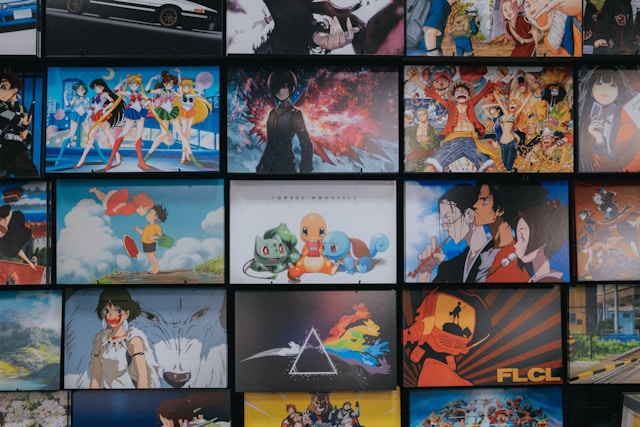

Reading
Reading is a wonderful way to relax and escape into different worlds. I enjoy reading a variety of genres, including fiction, non-fiction, and fantasy.
- Favorite Book: Kafka on the Shore by Haruki Murakami.
- Currently Read: 1Q84 by Haruki Murakami.
Watching Anime
Watching anime is one of my favorite pastimes. I enjoy a variety of genres and love the storytelling and art styles unique to anime.
- Favorite Anime: One Piece by Eiichiro Oda.
- Currently Watching: Attack on Titan by Hajime Isayama.
Gaming
Gaming is a great way to unwind and have fun. I enjoy both video games and board games, and often play with friends and family.
- Favorite Video Game: God of War by Santa Monica Studio.
- Currently Playing: Valorant by Riot.